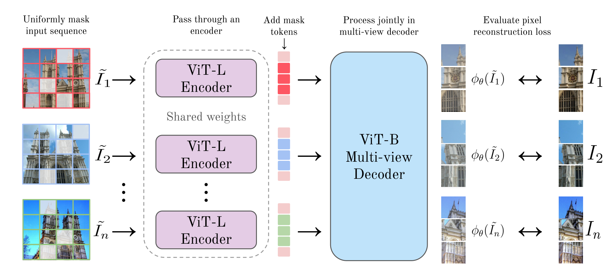
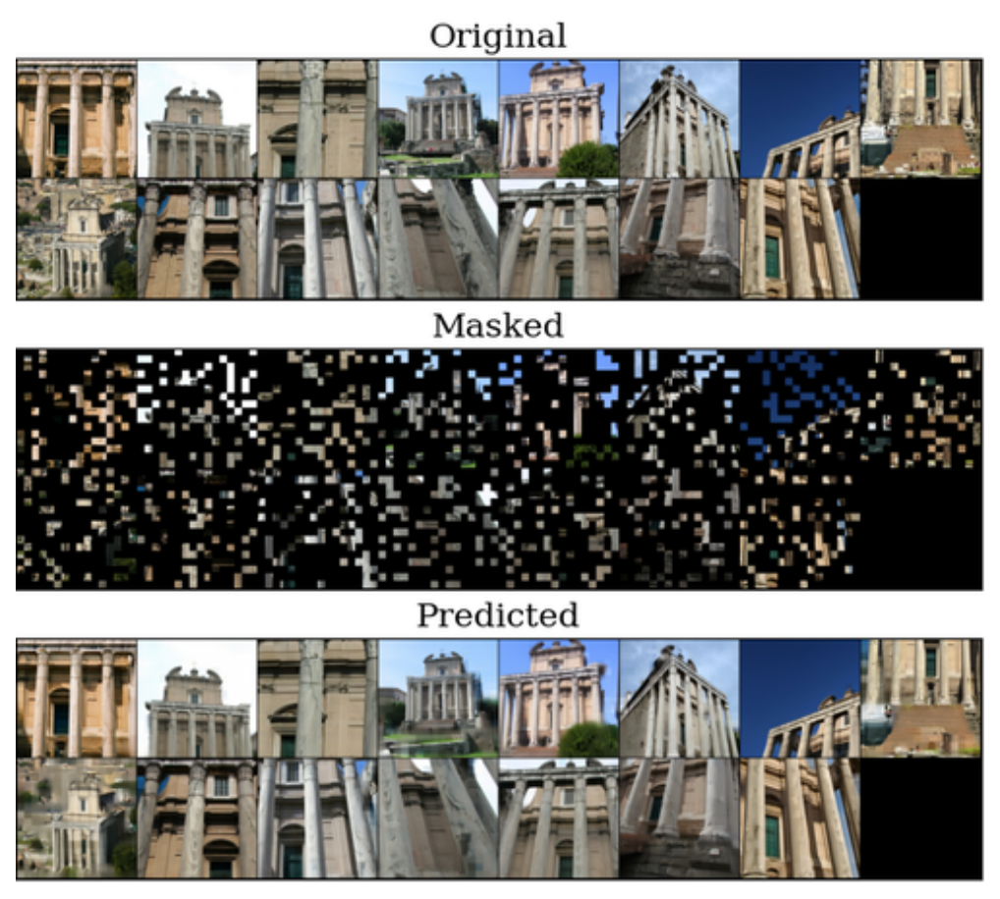
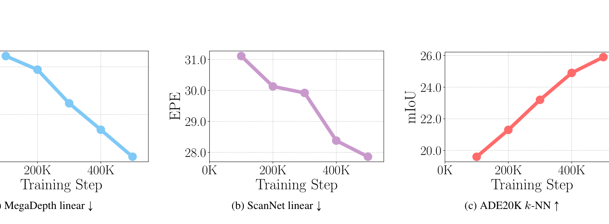

MuM: can plain pixel reconstruction learn geometry if every view is masked?
MuM asks whether MAE's simple pixel-reconstruction objective can become a geometry pretraining signal when the model sees many masked views of the same scene. It masks every view at 75%, encodes each view with the same ViT-L encoder, and lets a multi-view decoder reconstruct normalized pixels only at the masked patches. That symmetric design removes CroCo's unmasked reference view, so the objective works for arbitrary sequence lengths and falls back to standard MAE when only one image is available. The strongest evidence is geometric: with a frozen encoder on multi-view camera pose, MuM reaches AUC@30 of 71.5 / 50.8 / 73.0 on CO3Dv2, Re10K, and MegaDepth, above DINOv3's 66.9 / 36.7 / 59.3 under the same frozen-encoder protocol. The dense-matching result is strong but reads correctly only at matched backbone size: MuM is a ViT-L. Against the same-size DINOv3 ViT-L (Table 4), MuM wins both MegaDepth EPE (10.2 vs 19.0) and ScanNet EPE (27.9 vs 28.7); it trails only the much larger DINOv3 ViT-G on ScanNet EPE (27.9 vs 27.3), while leading both DINOv3 sizes on ScanNet robustness (78.9 vs 78.0 and 77.2). The boundary matters just as much: DINOv3 remains ahead on single-view depth, surface normals, ImageNet classification, and ADE20K segmentation. The compute claim is an order-of-magnitude disclosure, not a like-for-like bill: 61,440 H100-hours for the 7B DINOv3 versus 4,608 A100-hours for the much smaller ViT-L MuM — different GPU types and different model scales.
{kind=link}

1. Motivation: why would masked pixels teach geometry?
Self-supervised vision pretraining has two familiar poles. DINO-style self-distillation produces highly semantic features, but the paper emphasizes that DINOv3 is expensive and depends on carefully tuned anti-collapse machinery. MAE-style masked image modeling is cheaper and simpler, but single-view pixel reconstruction can often be solved from local texture and shape priors.
3D vision needs a different kind of feature. A matching model, a pose regressor, or a feedforward reconstruction network needs tokens that preserve where the same surface appears across views. CroCo moved MAE in that direction by asking one masked view to be reconstructed from an unmasked reference view. The cost is sampling: CroCo-style pairs need enough co-visible content, and the design is naturally tied to two views and an asymmetric reference frame.
Q: If MuM still reconstructs pixels, where does the geometric pressure come from?
Guide: ask what information is cheapest when 75% of every view is hidden.
A: With a single view, the model can lean on image statistics. With several views of the same scene, another option appears: a hidden patch in one view may be visible in another. To use that option, the decoder has to connect patches across viewpoints. The geometry is not written as a target, but it becomes useful because cross-view correspondence lowers the reconstruction loss.
Takeaway: MuM turns geometry into the shortest route to a pixel objective, rather than supervising geometry directly.
2. Contributions: what the paper actually adds
The authors make three explicit contributions. First, they extend masked image modeling to an arbitrary number of views from the same scene, with a simple symmetric training framework for 3D vision. Second, they compare a broad set of visual backbones through dense feature matching with a linear probe, rather than evaluating only a few geometry-specialized models. Third, they validate MuM as a feature extractor for feedforward 3D reconstruction, dense matching, and relative pose estimation against DINOv3 and CroCo v2.
The larger reader inference is narrower than "better self-supervised learning." MuM is best read as evidence that pixel reconstruction can be a strong geometry objective when the reconstruction problem is made multi-view. It is not evidence that pixel reconstruction beats DINOv3 everywhere. The paper's own Tables 7, 8, and 9 show the opposite on single-view depth, normals, classification, and segmentation.
How this page reads "surpasses DINOv3"
The claim is scoped to the geometry protocols in the paper. MuM surpasses DINOv3 in Table 2 and Table 3 with frozen multi-view 3D heads, and on MegaDepth dense matching in Table 4. It does not surpass DINOv3 on Table 7 depth, Table 8 normals, or Table 9 semantic recognition.
3. Data and task: what is being learned from?
MuM pretrains on a mixture inspired by DUSt3R and VGGT. The paper reports about 20 million frames, with the exact Table 1 total at 19,462k frames. Most sources are multi-view 3D datasets, but ImageNet-1K appears with 10% sampling probability even though it has only single-view data. That is possible because the MuM objective becomes ordinary MAE when the sequence length is one.
| Dataset | Type | Sampling probability | Frames |
|---|---|---|---|
| 3DStreetView | Outdoor / Real | 10% | 6282k |
| WildRGBD | Objects / Real | 10% | 3352k |
| DL3DV10K | Outdoor / Real | 10% | 3317k |
| RealEstate10K | Indoor / Real | 10% | 1332k |
| ImageNet-1K | Objects / Real | 10% | 1281k |
| MegaScenes | Outdoor / Real | 10% | 1235k |
| ScanNet++ | Indoor / Real | 10% | 1045k |
| CO3D | Objects / Real | 5% | 546k |
| MegaDepth | Outdoor / Real | 10% | 205k |
| BlendedMVS | Aerial / Synthetic | 5% | 115k |
| ARKitScenes | Indoor / Real | 5% | 113k |
| Hypersim | Indoor / Synthetic | 5% | 43k |
| Total | - | - | 19462k |
The downstream evaluation is organized by the number of views at inference. Multi-view tasks use more than two images for feedforward 3D reconstruction. Two-view tasks evaluate dense matching and relative pose. Single-view tasks evaluate monocular depth, surface normals, ImageNet-1K classification, and ADE20K segmentation. Unless a table says otherwise, the backbone is ViT-L, the size commonly used in recent 3D vision pipelines.
{kind=link}

4. Pipeline: five steps from views to a loss
The pipeline is deliberately small. The method changes the training problem before it changes the model family.
- Sample a scene sequence. The pretraining batch contains either ImageNet-1K single-view data with 10% probability or multi-view data with 90% probability. For multi-view data, the sequence length is sampled uniformly between 2 and 24.
- Mask every view uniformly. Each view uses the same 75% masking ratio. This is the key difference from CroCo's asymmetric reference setup.
- Encode each visible view independently. The ViT-L encoder has shared weights across views. That keeps the encoder usable as a normal single-image feature extractor after pretraining.
- Decode all views jointly. Mask tokens fill the missing patch locations, and a ViT-B decoder alternates frame-wise attention with global attention. Frame-wise attention processes each image internally; global attention lets tokens exchange information across views.
- Predict normalized pixels at masked patches. A linear head maps decoder features back to patch RGB values, and the loss is computed only where the mask says the patch was hidden.
Q: Why put cross-view communication in the decoder instead of the encoder?
A: The encoder is the part kept for downstream work, so MuM keeps it as a shared single-view encoder. The decoder is the training scaffold that creates cross-view pressure. Table 11 confirms the choice: decoder communication gives MegaDepth EPE 10.6, while encoder communication gives 16.7 under the same ViT-B ablation setup.
Takeaway: The decoder forces geometry during pretraining, but the exported artifact is still a clean ViT-L image encoder.
5. Method: MAE with a sequence as input
5.1 General masked image modeling
Let $\mathbf{I}=(I_1,I_2,\ldots,I_n)$ be $n$ images from the same scene, with each image split into $N$ non-overlapping patches. For image $i$, the binary mask $M_i\in\{0,1\}^N$ marks hidden patches with value 1. The visible mask is $\bar{M}_i=1-M_i$, so the partially visible image is:
How to read it: $M_i$ tells the loss where to look later, while $\bar{M}_i$ tells the encoder what it is allowed to see. This separation is why the model cannot get credit for copying visible pixels.
5.2 The learning objective
The network $\phi_\theta$ sees the visible sequence $\tilde{\mathbf{I}}=(\tilde{I}_1,\ldots,\tilde{I}_n)$ and predicts a target representation $f(I_i)$ for each image. In MuM, $f$ is the patch RGB target after subtracting the patch mean and dividing by the patch standard deviation.
How to read it: The sum runs over views. The input to $\phi_\theta$ is the whole visible sequence, not only image $i$. The multiplication by $M_i$ means the squared error is counted only on hidden patches.
Q: Eq. 1 looks like MAE repeated across views. What makes it multi-view?
Guide: the difference is not the squared loss. The difference is the information available to the predictor.
A: In single-view MAE, the best clue for a missing patch is the same image's visible context. In MuM, the predictor also sees other views of the same scene. If those views expose the hidden surface, cross-view correspondence becomes useful. The loss stays simple, but the easiest path to a lower loss now runs through geometry.
Takeaway: MuM changes what the model can use, not what the loss measures.
5.3 Relation to MAE and CroCo
The paper names two important special cases. Standard MAE is recovered when $n=1$ and the mask ratio is fixed at 0.75. CroCo uses two views with one heavily masked view and one unmasked reference view. MuM keeps the MAE-like 0.75 mask for every view and removes the reference-frame distinction, so the same objective covers one view, two views, and long scene sequences.
The architecture follows that objective. The encoder is a ViT-L with axial RoPE position encoding. The decoder is a ViT-B multi-view decoder with alternating attention blocks. Appendix A gives the model size: 389.5M trainable parameters, with about 302.3M in the encoder. The linear prediction head maps each 768-dimensional decoder token to the $3\times16\times16=768$ RGB values of a patch.
6. Training: what the paper discloses
MuM pretrains for 500K steps with AdamW, cosine learning-rate scheduling, and 25K warmup steps. The base learning rate is $1\times10^{-4}$ under the linear scaling rule, giving a peak learning rate of $2.4\times10^{-3}$ for global batch size 6144. Images are resized to $256\times256$, and horizontal mirroring is applied independently per frame. The paper says pretraining on 64 x A100 GPUs takes roughly three days.
The sequence sampling is part of the method. On each GPU, the batch either comes from ImageNet-1K with 10% probability or from multi-view data with 90% probability. For multi-view data, the sequence length $S$ is sampled uniformly from 2 to 24, and each GPU packs frames until it is about to exceed 96 frames. Appendix A describes the resulting batch shape as $\left(\left\lfloor 96/S\right\rfloor,S,3,256,256\right)$.
| Experiment | Model | GPUs | Time |
|---|---|---|---|
| Pretraining | MuM | 32 x A100 | 3 days |
| Pretraining | MuM | 64 x A100 | 3 days |
| RoMa | MuM | 4 x A100 | 5 days |
| RoMa | DINOv3 | 4 x A100 | 5 days |
| RoMa | CroCo v2 | 4 x A100 | 5 days |
| Relative pose | MuM | 32 x A100 | 1.5 days |
| Relative pose | DINOv3 | 32 x A100 | 1.5 days |
| Relative pose | CroCo v2 | 32 x A100 | 1.5 days |
| 3D reconstruction, frozen | MuM | 32 x H200 | 3 days |
| 3D reconstruction, frozen | DINOv3 | 32 x H200 | 3 days |
| 3D reconstruction, frozen | CroCo v2 | 32 x H200 | 3 days |
| 3D reconstruction, finetune | MuM | 16 x H200 | 3 days |
| 3D reconstruction, finetune | Random | 16 x H200 | 3 days |
Compute caveat
The paper's abstract-side compute comparison is DINOv3-7B at 61,440 H100 hours versus MuM at 4,608 A100 hours. Those are different GPU types and model scales, so the page treats "roughly 30x less training compute" as the paper's disclosed order-of-magnitude comparison, not as a hardware-normalized cost estimate.
The distillation finetuning experiment keeps the MuM decoder and appends heads for world points, camera parameters, and depth maps. The student is trained against a VGGT teacher with an unweighted L2 loss:
How to read it: $P$, $C$, and $D$ are world points, camera parameters, and depth maps; subscripts $t$ and $s$ denote teacher and student. The paper states that the three squared errors are summed without confidence weights.
7. Experiments: geometry wins, semantic limits
The experiments separate three regimes: multi-view reconstruction, two-view geometry, and single-view probes. The main pattern is stable: MuM is strongest where cross-view geometry matters, while DINOv3 is strongest where semantic or single-image cues dominate.
7.1 Multi-view feedforward 3D reconstruction
| Method | CO3Dv2 | Re10K | MegaDepth |
|---|---|---|---|
| Frozen encoder | |||
| CroCo v2 | 58.2 | 27.7 | 60.7 |
| DINOv3 | 66.9 | 36.7 | 59.3 |
| MuM | 71.5 | 50.8 | 73.0 |
| Distillation finetuning | |||
| Random | 10.6 | 28.0 | 41.8 |
| MuM | 62.6 | 50.9 | 78.6 |
Table 2 is the cleanest multi-view pose evidence. Under the frozen-encoder setup, MuM is ahead of DINOv3 and CroCo v2 on all three datasets. The finetuning rows answer a different question: starting from MuM is much stronger than random initialization, especially on CO3Dv2 and MegaDepth.
| Method | DTU Acc. | DTU Comp. | ETH3D Acc. | ETH3D Comp. |
|---|---|---|---|---|
| Frozen encoder | ||||
| CroCo v2 | 8.5 | 12.3 | 0.9 | 1.0 |
| DINOv3 | 6.4 | 3.7 | 0.9 | 1.0 |
| MuM | 3.7 | 1.6 | 0.8 | 0.8 |
| Distillation finetuning | ||||
| Random | 8.4 | 11.7 | 1.0 | 1.4 |
| MuM | 6.4 | 2.6 | 0.6 | 0.5 |
Table 3 supports the same geometry claim from a different output type. With a frozen encoder, MuM beats DINOv3 and CroCo v2 on both DTU metrics and both ETH3D metrics. In the finetuned section, the DTU accuracy value 6.4 is not lower than the random row's 8.4 by as much as the completeness value improves, so the best reading is "MuM is a better initialization overall," not "every metric improves equally."
7.2 Dense matching
| Method | Architecture | MegaDepth EPE | MegaDepth R | ScanNet EPE | ScanNet R |
|---|---|---|---|---|---|
| Weakly supervised | |||||
| SigLIP 2 | ViT-G/16 | 62.1 | 42.3 | 75.8 | 34.6 |
| PEcore | ViT-G/14 | 75.8 | 28.8 | 93.6 | 23.2 |
| Instance discrimination | |||||
| iBOT | ViT-L/16 | 28.5 | 73.7 | 38.6 | 66.1 |
| DINOv2 | ViT-L/14 | 26.5 | 77.0 | 43.9 | 60.7 |
| DINOv21 | ViT-L/14 | 19.3 | 84.6 | 29.7 | 74.4 |
| DINOv3 | ViT-L/16 | 19.0 | 86.4 | 28.7 | 78.0 |
| DINOv3 | ViT-G/16 | 17.1 | 87.2 | 27.3 | 77.2 |
| Masked image modeling | |||||
| CAPI | ViT-L/14 | 21.4 | 82.2 | 32.9 | 71.9 |
| I-JEPA | ViT-H/14 | 42.6 | 58.4 | 74.7 | 36.0 |
| V-JEPA 2 | ViT-H/16 | 60.6 | 37.8 | 86.5 | 23.0 |
| MAE | ViT-L/16 | 29.7 | 73.4 | 35.0 | 71.6 |
| CroCo v2 | ViT-L/16 | 27.3 | 75.7 | 39.0 | 66.6 |
| CroCo v22 | ViT-L/16 | 22.0 | 80.9 | 29.0 | 76.5 |
| MuM, 32 x A1003 | ViT-L/16 | 12.0 | 93.7 | 30.2 | 76.0 |
| MuM, 64 x A100 | ViT-L/16 | 10.2 | 94.2 | 27.9 | 78.9 |
1 DINOv2 weights finetuned in VGGT. 2 CroCo v2 weights finetuned in DUSt3R. 3 The paper marks this as a lighter training run using 66 A100 days versus 96 for CroCo v2.
Table 4 is powerful, but it must be read by column. MuM is clearly strongest on MegaDepth EPE and robustness. On ScanNet, MuM has the best robustness at 78.9 and beats DINOv3 ViT-L on EPE, 27.9 versus 28.7, but DINOv3-G has the lower EPE at 27.3. The honest conclusion is that MuM is an excellent geometry feature for dense matching, especially on MegaDepth, not that it wins every column against every larger backbone.
| Method | MegaDepth 1px | MegaDepth 3px | MegaDepth 5px | ScanNet 1px | ScanNet 3px | ScanNet 5px |
|---|---|---|---|---|---|---|
| RoMa (DINOv2) | 13.3 | 4.6 | 3.1 | 92.1 | 60.4 | 38.3 |
| CroCo v2 | 13.0 | 4.6 | 3.2 | 92.3 | 61.6 | 40.0 |
| DINOv3 | 13.8 | 5.2 | 3.8 | 92.3 | 61.0 | 38.9 |
| MuM | 12.5 | 4.0 | 2.6 | 92.2 | 60.5 | 38.1 |
Table 5 checks whether MuM helps inside an existing dense matcher. On MegaDepth, MuM improves all three thresholds. On ScanNet, it is mixed: MuM is best at 5px, while RoMa (DINOv2) is slightly better at 1px and 3px. This is an integration win with a dataset caveat.
7.3 Relative pose
| Method | MD 5 deg | MD 10 deg | MD 20 deg | Re10K 5 deg | Re10K 10 deg | Re10K 20 deg | BMVS 5 deg | BMVS 10 deg | BMVS 20 deg |
|---|---|---|---|---|---|---|---|---|---|
| CroCo v2 | 13.9 | 30.0 | 48.0 | 8.6 | 24.0 | 44.9 | 7.7 | 18.3 | 32.1 |
| DINOv3 | 15.6 | 32.5 | 51.2 | 7.3 | 20.7 | 39.6 | 3.3 | 10.3 | 23.0 |
| MuM | 26.7 | 47.0 | 65.0 | 10.3 | 25.3 | 44.5 | 6.6 | 18.4 | 35.8 |
The paper notes that this task gives CroCo v2 a slight structural advantage because its decoder also uses binocular cross-attention. MuM still dominates MegaDepth and most other thresholds. The exceptions matter: CroCo v2 is higher on Re10K at 20 degrees, 44.9 versus MuM 44.5, and on BlendedMVS at 5 degrees, 7.7 versus MuM 6.6.
7.4 Single-view probes
| Method | NYUd RMSE | KITTI RMSE |
|---|---|---|
| MAE | 0.59 | 4.19 |
| CroCo v2 | 0.51 | 4.09 |
| DINOv3 | 0.34 | 2.63 |
| MuM | 0.41 | 3.89 |
| Method | 11.25 deg | 22.5 deg | 30 deg | RMSE |
|---|---|---|---|---|
| MAE | 49.1 | 72.0 | 79.8 | 26.1 |
| CroCo v2 | 50.0 | 71.7 | 79.3 | 26.8 |
| DINOv3 | 60.4 | 79.3 | 85.4 | 22.5 |
| MuM | 54.3 | 75.8 | 82.6 | 24.5 |
| Method | IN1K Att. | ADE20K Lin. | ADE20K k-NN |
|---|---|---|---|
| Latent prediction | |||
| CAPI | 82.9 | 34.4 | 29.2 |
| DINOv2 | 85.4 | 39.0 | 34.8 |
| DINOv3 | 86.9 | 43.1 | 41.5 |
| Pixel reconstruction | |||
| MAE | 76.6 | 27.6 | 21.5 |
| CroCo v2 | 57.4 | 25.0 | 18.8 |
| MuM | 70.8 | 30.2 | 26.0 |
Tables 7 to 9 prevent the page from overselling MuM. MuM improves over CroCo v2 and MAE on depth and normals, but DINOv3 is still best on every column. On semantic recognition, DINOv3 leads by a wide margin, and MuM even trails MAE on ImageNet classification, 70.8 versus 76.6. The result is therefore a geometry specialization, not a universal replacement for semantic SSL.
{kind=link}

8. Ablations: which design choices carry the result?
The most important ablation compares objectives under the same data and training setting: ViT-B, MegaDepth, 100K steps, and 128 images per GPU. This table asks whether the multi-view trick helps every SSL objective or specifically helps pixel reconstruction.
| Method | Time | EPE |
|---|---|---|
| DINOv2 | 38h | 28.9 |
| DINOv2 with multi-view | 38h | 28.4 |
| CroCo v2 | 12h | 41.4 |
| MAE | 12h | 18.7 |
| MAE with multi-view | 12h | 12.5 |
Table 10 is the mechanism test. Multi-view barely changes DINOv2, from 28.9 to 28.4 EPE, but it moves MAE from 18.7 to 12.5. The result supports a precise claim: the multi-view setup is especially effective when paired with pixel reconstruction. It does not support the broader claim that any SSL objective gains equally from multi-view data.
| Ablation | Setting | EPE | Acc. |
|---|---|---|---|
| Sequence length | 2 to 6 | 12.8 | 47.4 |
| Sequence length | 2 to 12 | 12.5 | 47.4 |
| Sequence length | 2 to 24 | 10.6 | 47.8 |
| Mask ratio | 65% | 13.3 | 49.1 |
| Mask ratio | 75% | 10.6 | 47.8 |
| Mask ratio | 85% | 12.7 | 45.6 |
| Reference view | With reference | 11.9 | 47.7 |
| Reference view | Without reference | 10.6 | 47.8 |
| Frame communication | Encoder | 16.7 | 43.6 |
| Frame communication | Decoder | 10.6 | 47.8 |
| Positional embedding | Absolute | 12.1 | 46.9 |
| Positional embedding | RoPE | 10.6 | 47.8 |
| Reconstruction objective | Without normalization | 13.4 | 45.9 |
| Reconstruction objective | With normalization | 10.6 | 47.8 |
Table 11 ties the engineering details to the mechanism. Longer sequences improve matching because they offer more cross-view evidence. A 75% mask works better for geometry than 65% or 85%, which fits the "hard but still solvable" reconstruction story. Removing the reference view helps, decoder communication helps, RoPE helps, and normalized pixels help.
Q: Do the ablations prove that "more views" is the only reason MuM works?
A: No. More views are necessary but not sufficient. Table 10 shows that multi-view matters most when paired with MAE-style pixel reconstruction, and Table 11 shows that the effect also depends on mask ratio, decoder communication, RoPE, and normalized targets. The mechanism is a bundle: make reconstruction depend on cross-view evidence, then give the decoder the path to exchange that evidence.
Takeaway: The paper's best-supported mechanism is not "views alone"; it is multi-view masked pixel reconstruction with the right symmetry and decoder communication.
9. Limitations: where the result should stop
| Method | NAVI recall | MegaDepth EPE | ScanNet EPE |
|---|---|---|---|
| MAE | 43.7 | 88.8 | 83.4 |
| CroCo v2 | 41.0 | 60.3 | 62.1 |
| DINOv3 | 62.8 | 36.5 | 56.4 |
| MuM | 46.9 | 50.8 | 55.7 |
Appendix Table 13 is a useful warning. The main dense-matching gains rely on a lightweight linear probe. Without that probe, DINOv3 is better on NAVI and MegaDepth, while MuM only slightly leads ScanNet EPE, 55.7 versus 56.4. This does not invalidate the main protocol, but it limits the zero-shot raw-feature claim.
| Boundary | Paper evidence | How to read it |
|---|---|---|
| Semantic tasks | DINOv3 leads Table 7, Table 8, and Table 9. | MuM is a geometry encoder, not a DINOv3 replacement for semantic recognition. |
| Raw feature matching | Appendix Table 13 favors DINOv3 on NAVI and MegaDepth without a linear probe. | The main matching claim belongs to the linear-probe protocol. |
| Scaling | The paper says computational constraints prevented scaling pretraining further. | The training curves suggest room to improve, but larger-scale claims are unverified. |
| Full 3D pipeline replication | The paper says it does not have resources to fully replicate VGGT or MapAnything training. | The feedforward reconstruction models are inspired by those systems but smaller scale. |
| Compute access | Main pretraining is 64 x A100 for 3 days; downstream experiments use A100 or H200 clusters. | MuM is cheaper than DINOv3 by the paper's comparison, but not single-GPU cheap. |
| Data sampling details | MegaDepth and MegaScenes use special sequence-building heuristics; other datasets use simpler chunks or scene sequences. | The objective is simple, but exact reproduction still needs dataset-specific sequence construction. |
Q: What is the most likely overstatement?
A: "MuM beats DINOv3." The defensible version is narrower: MuM beats DINOv3 on the paper's multi-view geometry protocols and MegaDepth linear-probe matching, while DINOv3 remains stronger on single-view semantic and several raw-feature or single-view probes.
Takeaway: The paper is strongest as a geometry-pretraining paper, not as a universal SSL ranking.
10. Summary: the useful mental model
In one sentence: MuM makes MAE geometric by asking a decoder to reconstruct heavily masked views from a shared multi-view scene context, then keeps the encoder as a geometry-biased ViT-L feature extractor.
Three takeaways
- The mechanism is simple. Hide 75% of every view, let the decoder exchange information across views, and cross-view correspondence becomes useful for lowering pixel loss.
- The evidence is strongest on geometry. Table 2, Table 3, Table 4, and Table 6 support MuM as a strong feature encoder for pose, point clouds, dense matching, and relative pose.
- The boundary is explicit. DINOv3 stays ahead on depth, normals, semantic recognition, and several raw-feature matching measures, so MuM should be read as a geometry-specialized pretraining recipe.
The practical reading path is: start with Eq. 1, check Table 10 to see why multi-view MAE is the core objective, read Table 11 for the design constraints, and then use Tables 2 to 6 to judge the geometry evidence task by task.
Sources and figure provenance
- David Nordstrom, Johan Edstedt, Fredrik Kahl, Georg Bokman. MuM: Multi-View Masked Image Modeling for 3D Vision. arXiv:2511.17309v1 [cs.CV], 21 Nov 2025. The PDF lists Chalmers University of Technology, Linkoping University, and University of Amsterdam as affiliations, and gives the code URL as
github.com/davnords/mum. - All formulas, tables, compute numbers, and experimental claims in this page are taken from the paper PDF. Interpretive comments are framed as reader analysis, not as additional paper claims.
- Figure provenance: every embedded figure is a local PNG under
assets/figures/mum/, reused from the repository's existing figure set without re-extraction. Page Figure 1 maps to paper Figure 1 (mum_fig1.png, MuM pretraining pipeline). Page Figure 2 maps to paper Figure 3 (mum_fig3.png, data example and reconstructions). Page Figure 3 maps to paper Figure 2 (mum_fig2.png, training dynamics). No other figures are embedded. - No external commentary citations are fabricated. MAE, CroCo v2, DINOv3, VGGT, RoMa, DUSt3R, and dataset names are discussed only as they appear in the paper text and tables.